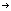

Nutrition Facts
servings per container
Serving size
(g)
Amount Per Serving
Calories
% Daily Value*
%
Total Fat g
%
Saturated Fat g
Trans Fat g
%
Cholesterol mg
%
Sodium mg
%
Total Carbohydrate
g
%
Dietary Fiber g
Total Sugars g
%
Includes g Added
Sugars
Protein g
%
Vitamin D mcg
%
Calcium mg
%
Iron mg
%
Potassium mg
The % Daily Value (DV) tells you how much a nutrient in a serving of food contributes to a daily diet. 2,000
calories a day is used for general nutrition advice.